← Index · ← Previous · Next →
Authors: Florent Dupont, Semyon Klevtsov
Type: theory · Category: strongly correlated electrons · PDF: https://arxiv.org/pdf/2605.18089v1
Analysis basis: full PDF text, analyzed in chunks
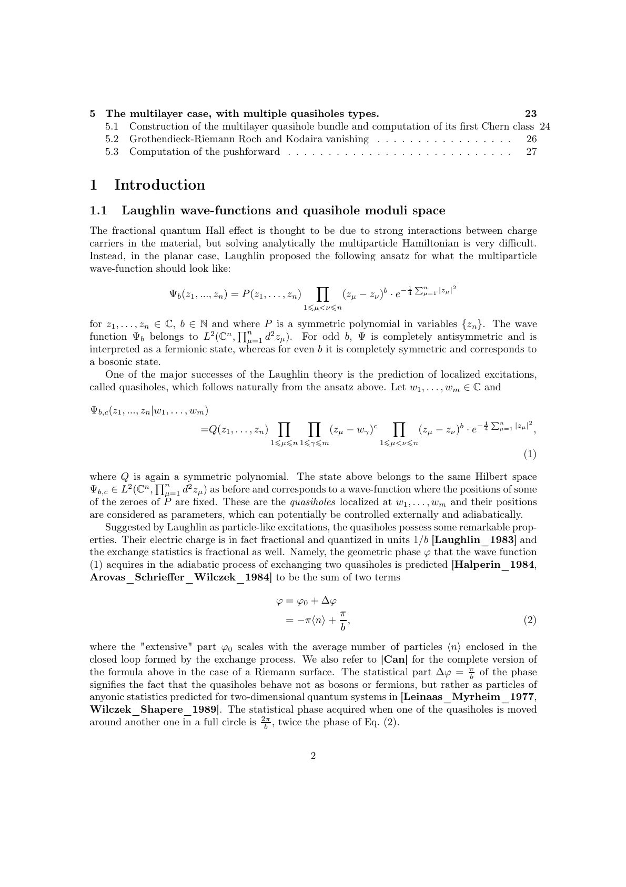
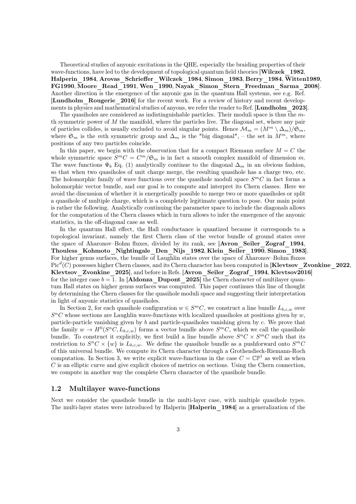
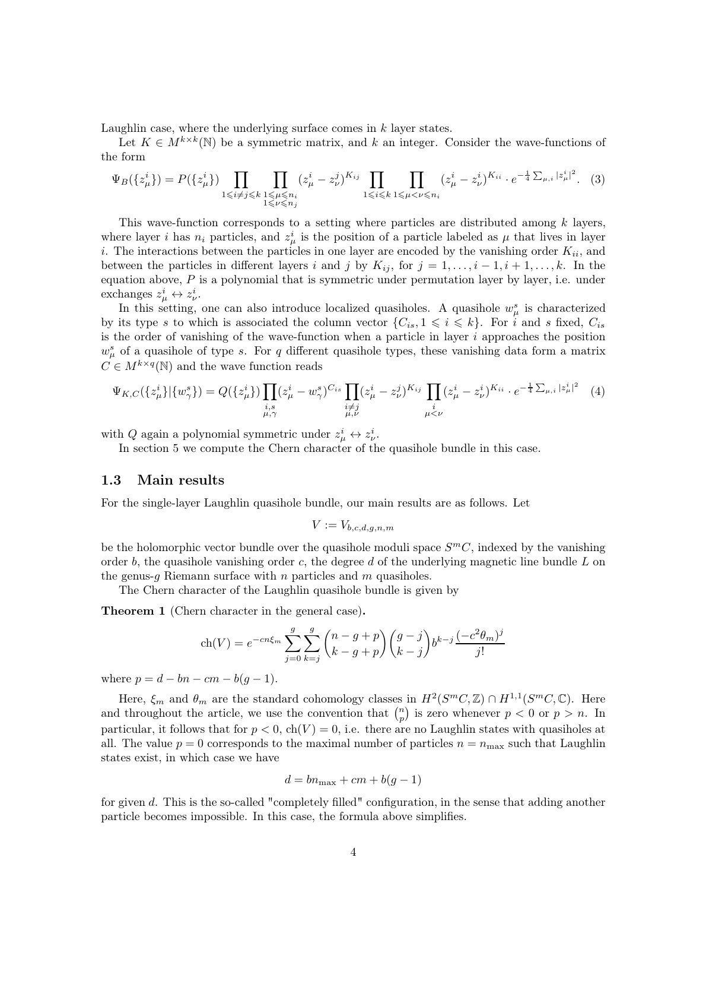
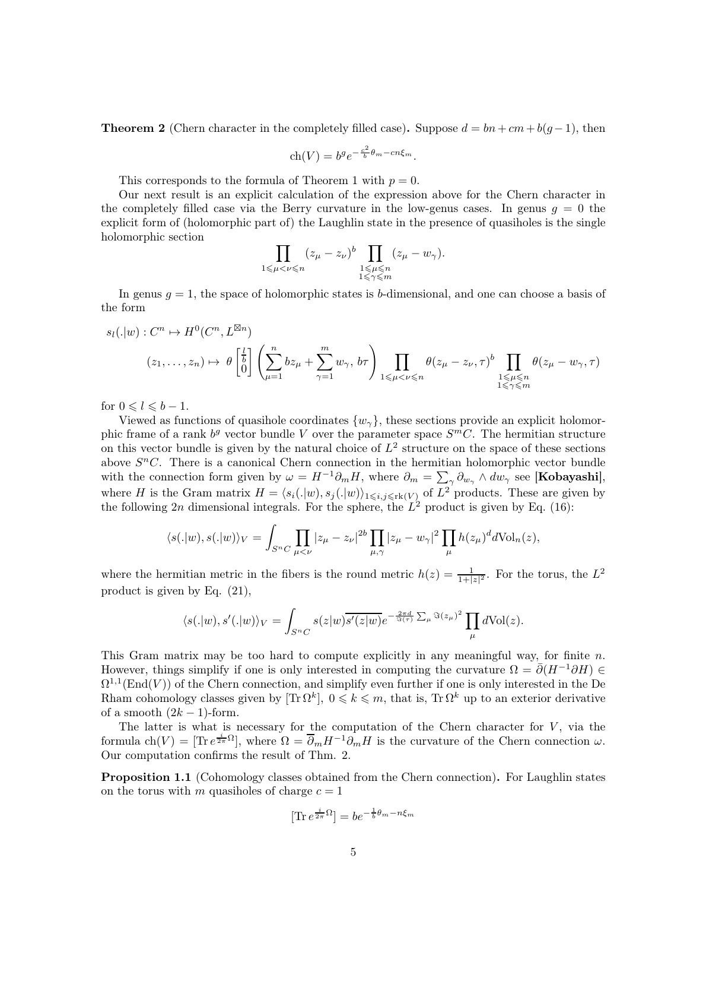
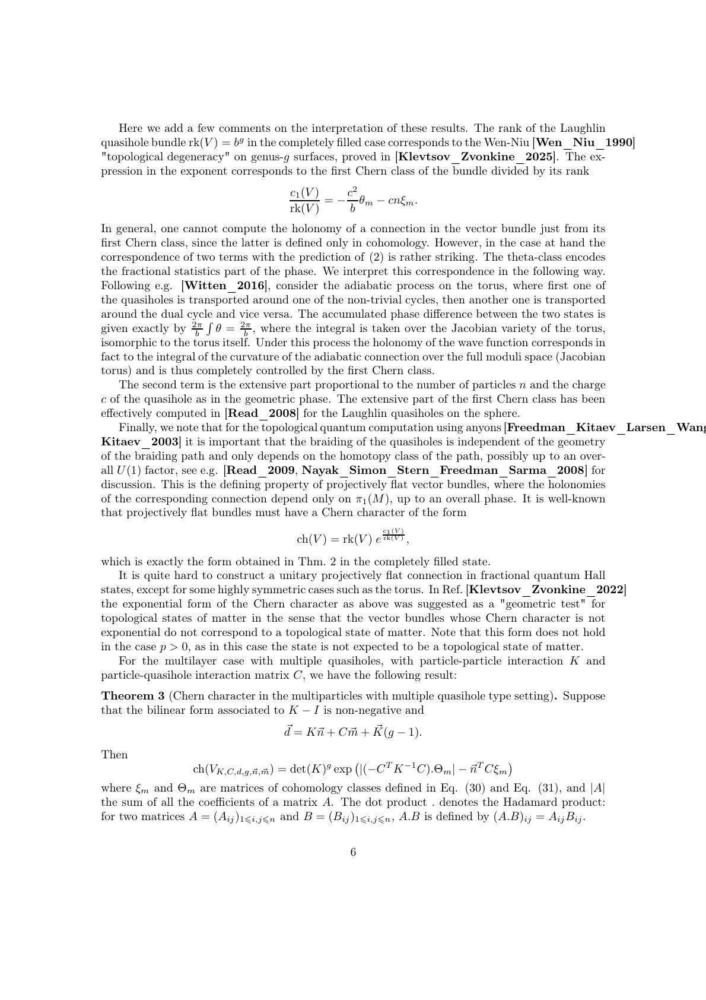
Summary. This paper provides a rigorous topological description of Laughlin quasihole states on arbitrary Riemann surfaces. By computing the Chern character of the quasihole bundle, the authors mathematically link the topological invariants of the bundle to the physical fractional statistics and Aharonov-Bohm phases observed in the fractional quantum Hall effect.
Why it may be interesting. not directly relevant
Main problem. The paper aims to compute the Chern character and Chern classes of the Laughlin quasihole bundle over the quasihole moduli space on Riemann surfaces of arbitrary genus.
Main result. The authors derive a general formula for the Chern character of the quasihole bundle and show that in the completely filled state, the bundle is compatible with projective flatness, with results matching the predicted Berry phase decomposition.
Method. The study employs the Grothendieck-Riemann-Roch theorem, the Abel-Jacobi map, and the Chern-Weil theory, alongside explicit verification in genus 0 and 1 using the Chern connection and theta functions.
Model / system. The system consists of single-layer and multi-layer Laughlin fractional quantum Hall states on Riemann surfaces of genus g, featuring particles and quasiholes with specific vanishing orders (b and c) and interaction matrices (K and C).
Key observables. Chern character, Chern classes, Berry phase (Aharonov-Bohm and fractional statistical contributions), and Hall conductance.
Important parameters / regimes. Genus (g), number of particles (n), number of quasiholes (m), particle-particle vanishing order (b), particle-quasihole vanishing order (c), and magnetic line bundle degree (d).
Assumptions / limitations. The calculation assumes the wave-functions can be analytically continued and that the chosen frame of sections is holomorphic in the quasihole positions.
Paper structure. The paper begins with the geometric construction of the quasihole bundle, proceeds to derive the Chern character using the Grothendieck-Riemann-Roch theorem, provides explicit low-genus verifications, and concludes with a generalization to multi-layer systems.
We study fractional quantum Hall states with quasihole excitations, on Riemann surfaces of arbitrary genus. For configurations with $m$ quasiholes we construct a vector bundle above the $m$-th symmetric power of the curve so that the fiber at a point $\lbrace w_1,\dots,w_m \rbrace$ corresponds to the state with quasiholes localized at these positions. We determine the Chern character of this bundle via the Grothendieck-Riemann-Roch theorem and show that in the completely filled state, i.e. when the number of particles is maximal, the vector bundle is compatible with the condition of projective flatness. Furthermore, we obtain a generalization of this result to the case of multiple layers and multiple quasihole types. In genus zero and one, we construct explicit wave-functions and verify that the curvature of the associated Chern connection reproduces the predicted Chern classes. The Chern classes obtained match, term by term, the predicted decomposition of the Berry phase under quasihole exchange, into an extensive Aharonov--Bohm contribution and a fractional statistical contribution.
Authors: Divyansh Tripathi, Vimal Kishore, Panagiotis E. Theodorakis, Swarn Lata Singh
Type: theory · Category: statistical mechanics · PDF: https://arxiv.org/pdf/2605.18279v1
Analysis basis: full PDF text, analyzed in chunks
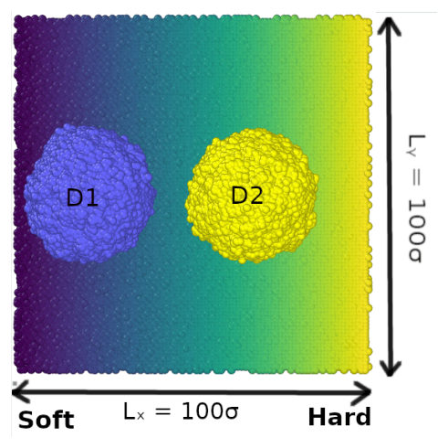
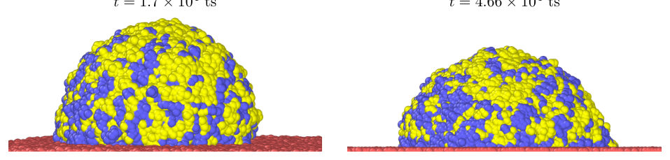
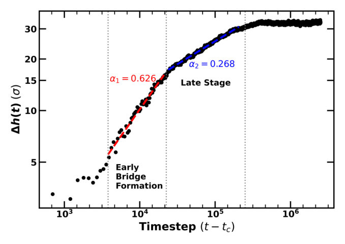
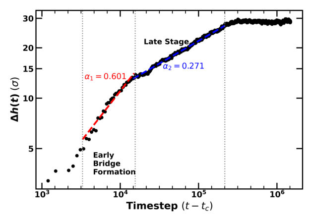
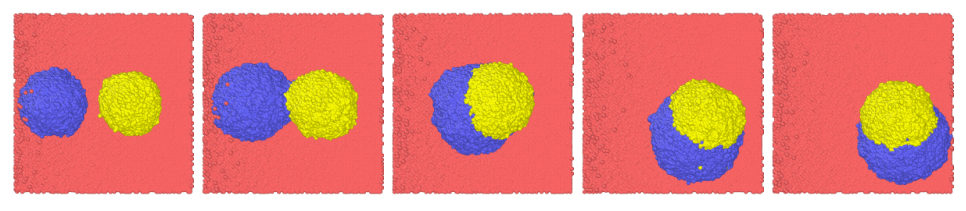
Summary. This paper studies how polymer droplets merge when moving across a surface with varying stiffness. It reveals that the merging process transitions between different physical regimes (capillarity vs. viscoelasticity) and is highly sensitive to the chemical attractions between the droplets and the surface.
Why it may be interesting. not directly relevant
Main problem. Investigating the coalescence dynamics of two viscoelastic polymer droplets moving on a soft substrate with a stiffness gradient (durotaxis).
Main result. The study identifies a crossover from a capillarity-dominated to a viscoelasticity-dominated regime in bridge growth and shows that coalescence morphology and mixing depend strongly on inter- and intra-droplet attraction strengths.
Method. Coarse-grained molecular dynamics simulations using the LAMMPS package with a Langevin thermostat and Velocity-Verlet integration.
Model / system. Two viscoelastic polymer droplets (modeable via FENE potential and LJ interactions) moving on a deformable substrate with a stiffness gradient implemented via a harmonic potential.
Key observables. Temporal growth of bridge height (h) and radius (r), power-law exponents (alpha and beta), contact angle, and degree of droplet mixing.
Important parameters / regimes. Substrate stiffness gradient, velocity ratios of droplets, droplet-surface attraction strength, and droplet-droplet/intra-droplet interaction strengths.
Assumptions / limitations. The system is modeled using coarse-grained particles; the effect of droplet bending rigidity is not considered.
Figures summary. Figure 1 shows the experimental setup of durotaxis motion; Figure 8 shows the distance between droplet centers of mass; Figure 9 shows time-sequenced snapshots of the 'enveloping' morphology.
Paper structure. The paper introduces the problem of durotactic coalescence, describes the molecular dynamics model and simulation setup, compares stationary vs. moving droplets, analyzes the effect of various interaction parameters, and discusses biological implications.
Here, we study the coalescence of two droplets that are moving in the same direction on a soft surface; the motion of the droplets is caused by a gradient in the surface stiffness. As reference, stationary coalescence of the same droplets is also studied on the corresponding uniform surfaces for different stiffness values. To describe the coalescence phenomenon on a surface with stiffness gradient, a relevant range of velocity ratios of the leading and the trailing droplet was considered to elucidate the effect of this parameter on coalescence. Moreover, to analyze the dynamics of the process, the temporal growth of the bridge height $(h)$ was investigated, which follows a power law $(h \sim t^α)$, before eventually attaining a constant value. The obtained values of $α$ show a transition from a higher to a lower value as a function of time, pointing to the presence of two distinct power-law growth regimes, where the transition signifies the crossover from the capillarity-dominated regime to the viscoelasticty-dominated regime of coalescence. In addition, varying attractive strengths for droplet--droplet and intra-droplet interactions were considered. The results indicate that both the dynamics and the degree of the coalescence strongly depend on these interaction parameters. Thus, we anticipate that our results will shed more light on the durotaxis-driven coalescence of polymeric droplets for various relevant system parameters, which will have practical implications for applications ranging from microfluidics to ink-jet printing, where substrate properties may vary. In addition, results may add to the fundamental understanding of the interactions among multicellular aggregates moving on biological surfaces.
Authors: Zhenhao Wang, Weijing Bao, Jia-Rui Luo, Gentaro Watanabe, Kui-Tian Xi
Type: theory · Category: quantum gases · PDF: https://arxiv.org/pdf/2605.18139v1
Analysis basis: full PDF text, analyzed in chunks
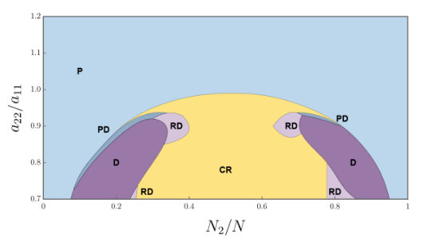
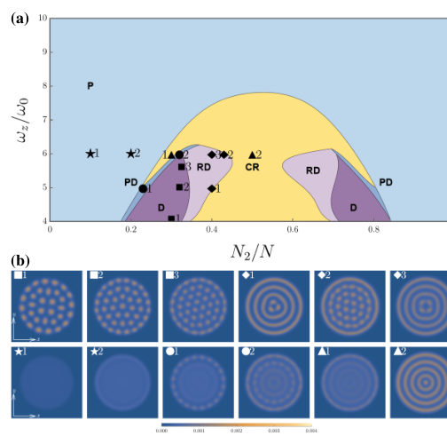
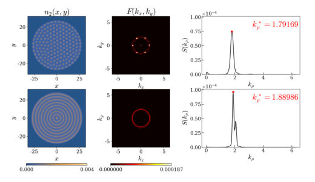
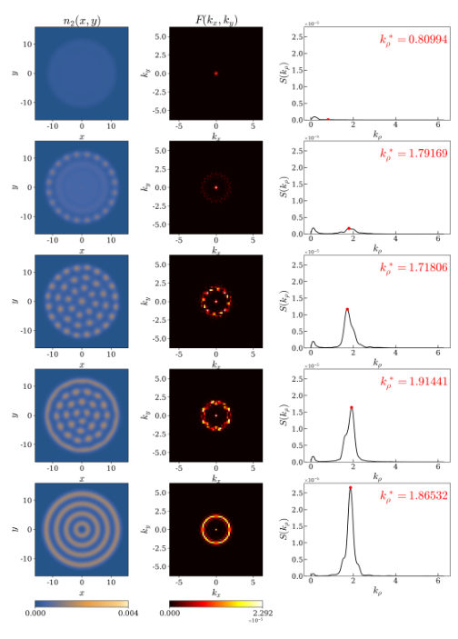
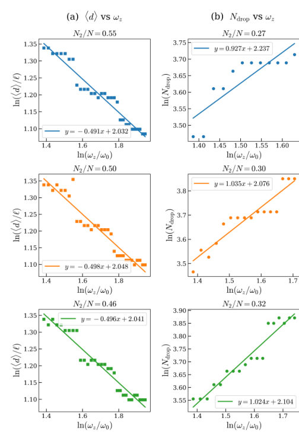
Summary. This paper explores how axial confinement and population imbalance control the formation of complex density patterns in a two-component dipolar BEC. It demonstrates that these quantum patterns mimic microphase-separated structures in polymers and that their characteristic length scales are tunable via the confinement geometry.
Why it may be interesting. It provides a controllable quantum fluid platform to study microphase separation and pattern formation, drawing a direct structural correspondence between quantum gases and soft-matter systems like diblock copolymers.
Main problem. Investigating ground-state density pattern selection and morphological transitions in a population-imbalanced, two-component dipolar Bose-Einstein condensate confined in a circular quasi-2D box.
Main result. The study identifies a sequence of morphologies (pancake, droplet arrays, concentric rings) where the population ratio acts as an effective volume fraction, and discovers that the pattern spacing scales linearly with the axial confinement length.
Method. A mean-field approach using coupled Gross-Pita_Pitaevskii equations (GPEs) minimized via the preconditioned conjugate-gradient method and evaluated using Fast Fourier Transforms.
Model / system. A binary (two-component) dipolar Bose-Einstein condensate of 52Cr atoms in a quasi-2D circular box with tight axial harmonic confinement.
Key observables. 2D column density profiles, density contrast (C2), structure factors (radial and 2D Fourier power spectrum), and characteristic wave vectors.
Important parameters / regimes. Population ratio (N2/N), axial confinement strength (omega_z), interaction asymmetry (a22/a11), and box radius (R0).
Assumptions / limitations. Zero temperature, mean-field approximation (neglecting Lee-Huang-Yang fluctuations), and rigid/hard-wall-like boundary conditions for the box potential.
Figures summary. Figures show real-space density patterns for different phases, density contrast (C2) as a function of population ratio and axial confinement, and scaling analysis of pattern spacing.
Paper structure. The paper introduces the system and its analogy to block copolymers, describes the mean-field model and numerical methods, presents phase diagrams and morphological transitions, analyzes scaling laws and geometric frustration, and concludes with implications for quantum fluid pattern selection.
We study the ground-state density patterns of a population-imbalanced two-component dipolar Bose-Einstein condensate confined in a circular quasi-two-dimensional box. Using a mean-field model, we map out phase diagrams as functions of the axial confinement, interaction imbalance, and population ratio. The system supports a rich sequence of stationary morphologies, including a nearly uniform pancake state, pancake-droplet and ring-droplet coexistence states, droplet arrays, and concentric rings. These patterns show a close structural correspondence to microphase-separated morphologies in diblock-copolymer systems, with the population imbalance acting as an effective volume fraction that selects the pattern topology. Analysis of the density profiles and structure factors reveals that the modulated states possess an intrinsic nonzero characteristic wave vector, which remains essentially unchanged when the box size is varied. We also find that the characteristic pattern spacing scales linearly with the axial confinement length, indicating that the transverse thickness of the condensate controls the effective in-plane length scale. In a finite circular box, this smooth scaling is interrupted by discrete steps, reflecting geometric frustration and the integer locking of the number of rings or droplets. Our results show that box-trapped dipolar mixtures provide a controllable platform for studying finite-size pattern selection and nonlocal microphase formation in quantum fluids.
Authors: Raju Baral, Harald O. Jeschke, Igor I. Mazin, Jue Liu, David Mandrus, Stuart Calder
Type: both · Category: strongly correlated electrons · PDF: https://arxiv.org/pdf/2605.16541v1
Analysis basis: full PDF text, analyzed in chunks
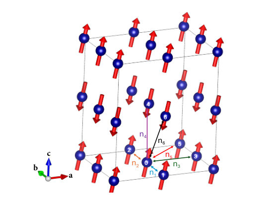
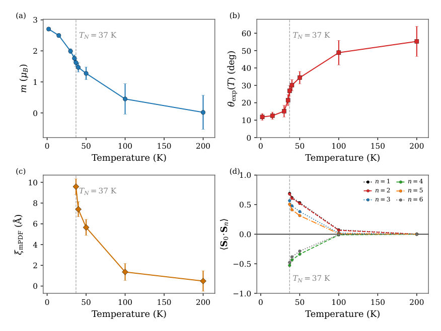
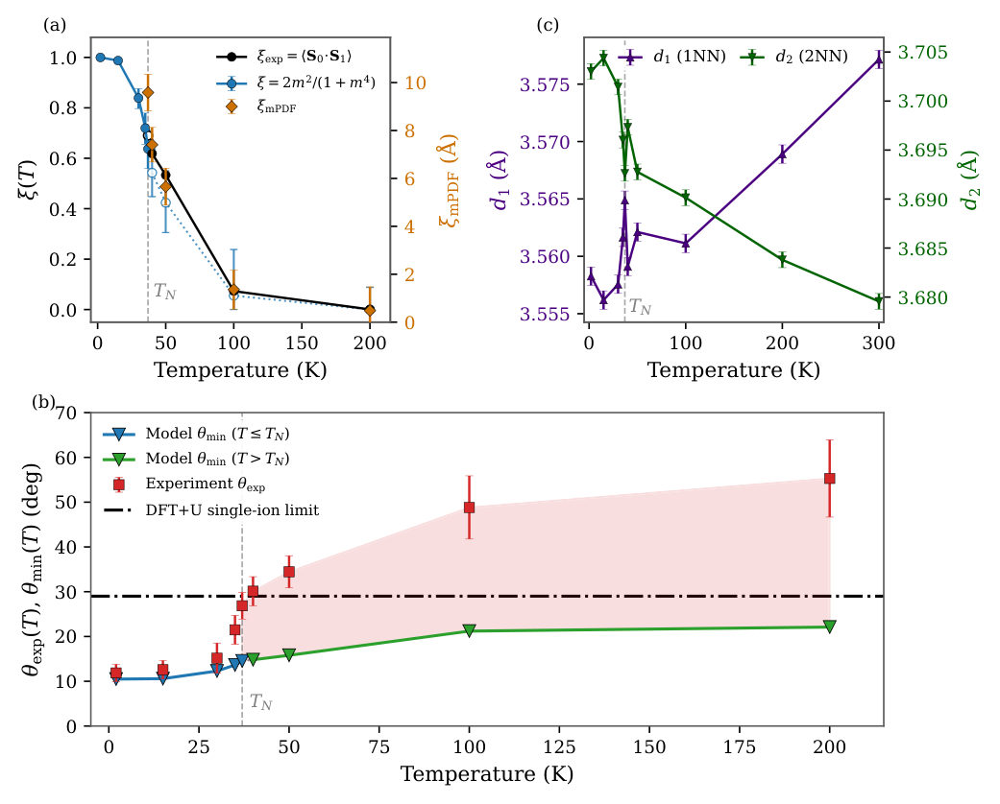
Summary. This paper demonstrates that the spin reorientation in CrPS4 is caused by the temperature-dependent decay of magnetic correlations, which affects exchange anisotropy differently than single-ion anisotropy. By combining neutron scattering with ab initio calculations, the authors provide a quantitative microscopic description of how low-dimensional correlations control magnetic anisotropy.
Why it may be interesting. not directly relevant
Main problem. Identifying the mechanism behind the temperature-induced spin reorientation transition (SRT) in the quasi-1D van der Waals antiferromagnet CrPS4.
Main result. The SRT is driven by a differential renormalization where decaying intersite correlations suppress exchange-anisotropy channels while single-ion anisotropy remains local, causing the effective easy axis to rotate.
Method. The study combines magnetic pair distribution function (mPDF) analysis of neutron total scattering with DFT+U calculations for energy mapping and classical Monte Carlo simulations.
Model / system. The system is CrPS4, a quasi-1D van der Waals antiferromagnetic semiconductor with A-type magnetic order. The model uses a microscopic spin Hamiltonian including isotropic exchange, exchange-anisotropy, and single-ion anisotropy terms.
Key observables. Magnetic pair distribution function (mPDF), local magnetic order parameter (m), spin polar angle (theta), correlation length (xi), and Cr-Cr bond distances (d1, d2).
Important parameters / regimes. Neeel temperature (TN = 37 K), Hubbard U (2 eV), exchange couplings (J1, J2), and spin-spin correlation functions.
Assumptions / limitations. The model uses a dominant-chain approximation focusing on n=1 and n=2 bonds and neglects Dzyaloshinskii-Moriya interactions due to inversion symmetry.
Figures summary. Figure 1 shows a schematic of the system; Figure 3 compares the correlation-renormalization factor and predicted spin angles against experimental data, and shows structural anomalies in Cr-Cr bond distances at TN.
Paper structure. The paper introduces the spin reorientation problem, describes the mPDF and DFT+U methodology, presents the results of local correlation measurements, develops the anisotropy renormalization model, and discusses the connection to structural anomalies.
We identify a correlation-driven mechanism for the temperature-induced spin reorientation in the quasi-one-dimensional van der Waals antiferromagnet CrPS4. Magnetic pair distribution function (mPDF) analysis resolves the local spin direction and shows that ferromagnetic intrachain correlations persist far above TN. Combining these correlations with a DFT-derived spin Hamiltonian reveals competing single-ion and exchange-anisotropy channels, with single-ion anisotropy remaining local while exchange anisotropy is renormalized as intersite correlations decay. This differential renormalization rotates the effective easy axis and captures the ordered-state canting. Above TN, the continued rotation beyond the model prediction delineates the limits of the dominant-chain approximation. These results establish mPDF-derived correlations as direct inputs to microscopic Hamiltonians and show how low-dimensional correlations can control magnetic anisotropy.
Authors: Daniil Frolov, Jean-Olivier Plouchart, Utku Soylu
Type: experiment · Category: other · PDF: https://arxiv.org/pdf/2605.17073v1
Analysis basis: full PDF text, analyzed in chunks
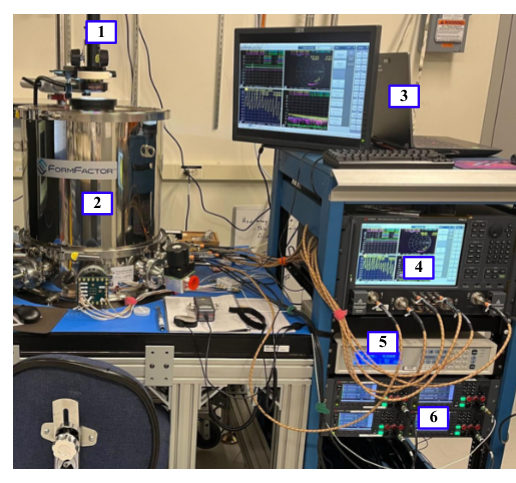
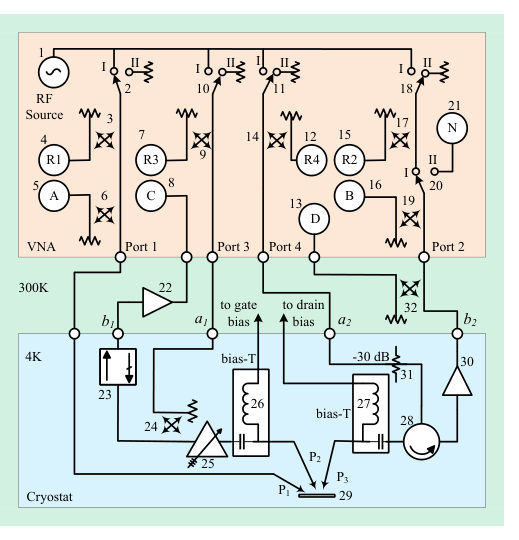
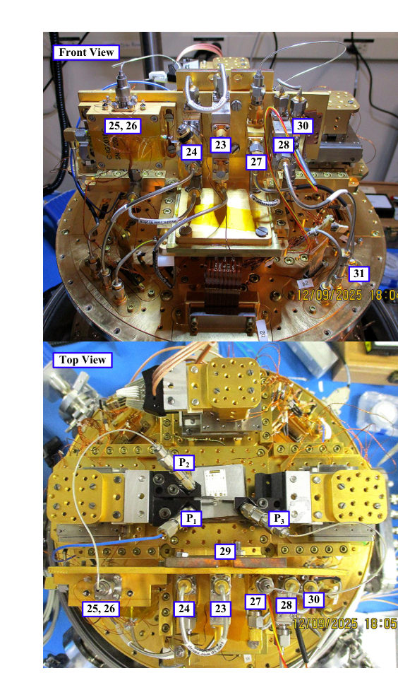
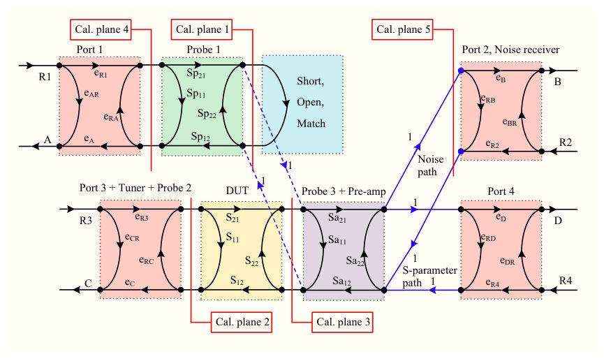
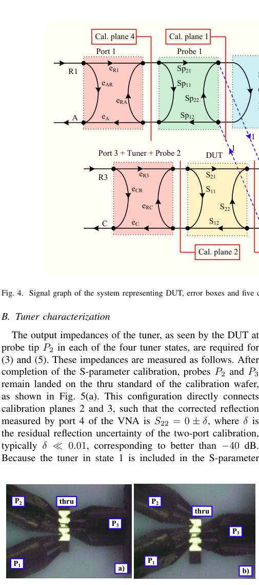
Summary. This paper presents a new method for measuring the noise properties of semiconductor transistors directly on a wafer at 4 K. By using a cryogenic preamplifier and a specialized calibration technique, the researchers can measure low-gain devices that would otherwise be hidden by room-temperature noise. This is crucial for developing the readout electronics needed for quantum computing and radio astronomy.
Why it may be interesting. not directly relevant
Main problem. The difficulty of performing accurate, direct on-wafer noise parameter measurements of low-gain transistors at cryogenic temperatures (4 K) because their output noise power is often below the room-temperature instrumentation noise floor.
Main result. The development of a vector-corrected measurement framework that enables simultaneous S-parameter and noise parameter extraction for 14nm FinFETs and LNAs at 4 K, successfully overcoming the room-temperature noise floor using a cryogenic preamplifier.
Method. A combination of the 'source-pull' and 'cold-source' methods using a four-state cryogenic tuner, integrated with a TRL (thru-reflect-line) calibration scheme and a cryogenic preamplification chain.
Model / system. A cryogenic measurement platform consisting of a 4 K cryostat with wafer probes, a four-port VNA, a cryogenic impedance generator (tuner), and a preamplification chain, used to characterize 14nm FinFETs and LNA dies.
Key observables. S-parameters (S11, S21, S12, S22), noise parameters (minimum noise temperature Te, minimum noise factor Fmin, optimal reflection coefficient Gamma_opt, and Lange invariant 4N), and I-V curves.
Important parameters / regimes. Temperature of 4 K; frequency range of 5-12 GHz (C- and X-bands); 14nm FinFET technology.
Assumptions / limitations. Assumes S21 = S12 reciprocity for the probe; assumes high circulator isolation and good matching to simplify the mismatch coefficient.
Figures summary. Schematics of the measurement stand and electrical signal paths; physical layout of cryogenic hardware; signal flow graphs and calibration planes; and plots of FET/LNA S-parameters, noise temperatures, and optimal impedances.
Paper structure. The paper introduces the scientific challenge, describes the hardware architecture and signal path, details the operational modes (S-parameter and noise parameter), explains the TRL calibration and de-embedding procedure, presents the characterization of the FETs and LNAs, and concludes with validation and future improvements.
This paper describes the setup and the results of the direct on-wafer measurements of a FET noise parameters obtained with a source-pull method at temperatures down to T=4K and in the 5-12 GHz frequency range. The setup consists of a cryostat with wafer probes, two reflectometers, a programmable impedance generator, wideband isolators and bias tees and low noise preamplifier, all cooled to cryogenic temperatures, allowing to perform a full vector error-corrected wafer-level measurements of the discrete transistors and amplifier dies. The setup and its calibration procedure are designed in a such way that allows simultaneous calibration, S-parameters, noise parameters and I-V curve measurements of several FETs all in one cooldown. Using the described setup we perform first measurements of 14nm FinFETs and also measure noise parameters of an LNA based on these FETs. Resulting noise temperature values are compared against those obtained using independent and alternative measurement techniques.
Authors: Lie Yuan, Junkang Huang, Yu-Xuan Li, Tao Zhou
Type: theory · Category: strongly correlated electrons · PDF: https://arxiv.org/pdf/2605.18429v1
Analysis basis: full PDF text, analyzed in chunks
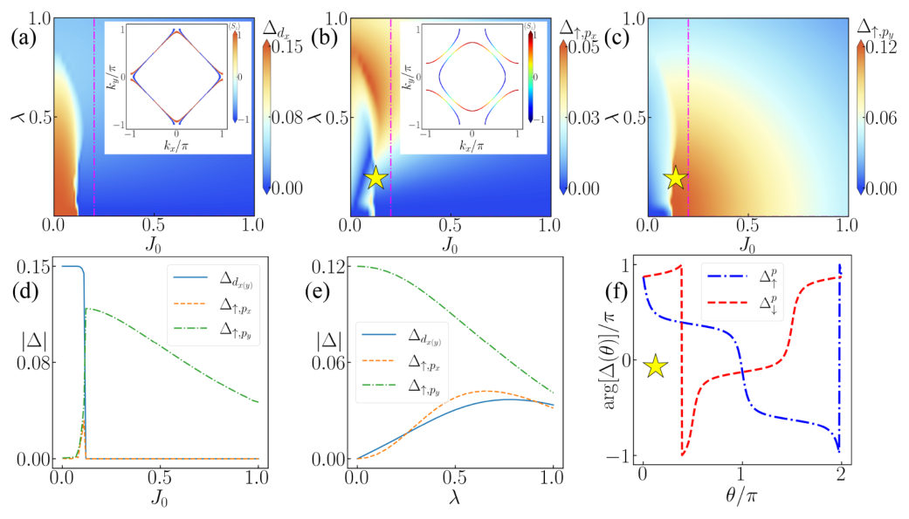
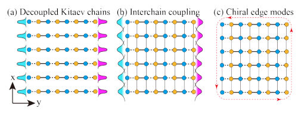
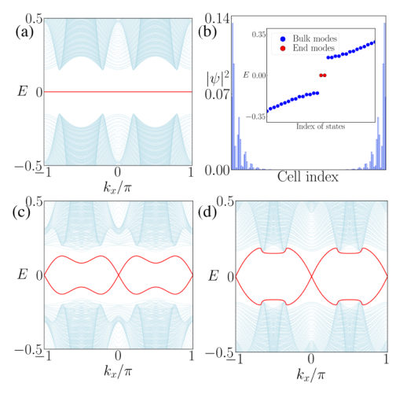
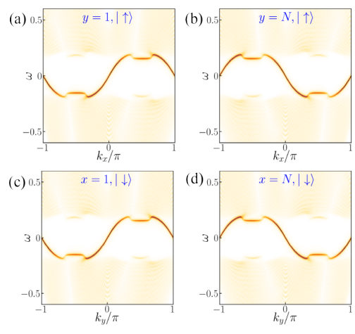
Summary. This paper demonstrates that altermagnetic spin splitting acts as an intrinsic mechanism to select anisotropic triplet pairing in superconductors. It reveals that this symmetry leads to a unique spin-edge locking effect, where the spin of Majorana boundary states is determined by the crystal edge orientation.
Why it may be interesting. not directly relevant
Main problem. The study investigates how altermagnetic spin splitting selects specific superconducting pairing symmetries and how this anisotropy influences the topological properties of boundary states.
Main result. Altermagnetic spin splitting suppresses singlet pairing and stabilizes anisotropic equal-spin triplet order, leading to spin-edge locking where boundary spin polarization is tied to edge orientation.
Method. The authors use a self-consistent mean-field Bogoliubov-de Gennes (BdG) framework, Ginzburg-Landau theory, and Green's function approach for spectral analysis.
Model / system. A two-dimensional d-wave altermagnetic metal model featuring momentum-dependent spin splitting, Rashba spin-orbit coupling, and short-range attractive interactions.
Key observables. Pairing amplitudes (singlet and triplet), Majorana boundary states, spin-resolved boundary spectral functions, and momentum-space phase winding numbers.
Important parameters / regimes. Altermagnetic exchange splitting (J0), Rashba spin-orbit coupling strength (lambda), hopping parameter (t0), and interaction strength (V).
Assumptions / limitations. The model is a minimal effective two-band projection of a more complex system and assumes short-range attractive interactions on nearest-neighbor bonds.
Figures summary. Figure 1 shows order parameter magnitudes and Fermi surfaces; Figure 2/3 illustrates the evolution of Majorana modes from flat to dispersive; Figure 4 displays spin-resolved boundary spectral weights.
Paper structure. The paper introduces the altermagnetic model, performs self-consistent calculations of pairing symmetry, analyzes the topological phase winding, investigates the effect of Rashba coupling on edge states, and concludes with the discovery of spin-edge locking.
We investigate self-consistent unconventional superconductivity in a two-dimensional $d$-wave altermagnetic metal. We find that momentum-dependent altermagnetic spin splitting suppresses opposite-spin singlet pairing and stabilizes highly anisotropic equal-spin triplet order. In the spin-conserving limit, this directional triplet pairing gives rise to nearly dispersionless Majorana boundary states associated with effective one-dimensional topological channels. Rashba spin-orbit coupling mixes spin sectors, activates additional pairing components, and drives the system into a mixed-parity superconducting state with dispersive Majorana boundary states. The spin-resolved boundary spectra further reveal a characteristic locking between boundary orientation and spin polarization, reflecting the underlying altermagnetic symmetry. These results identify altermagnetic spin splitting as an intrinsic mechanism for selecting unconventional pairing and generating spin-resolved Majorana boundary states without external magnetic fields.
Authors: Rong Cheng, Tao Li, Jianhua Yang
Type: theory · Category: strongly correlated electrons · PDF: https://arxiv.org/pdf/2605.17227v1
Analysis basis: full PDF text, analyzed in chunks
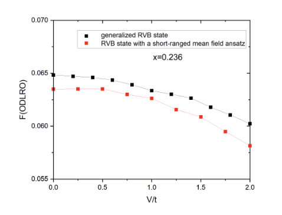
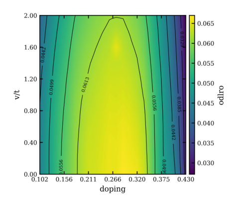
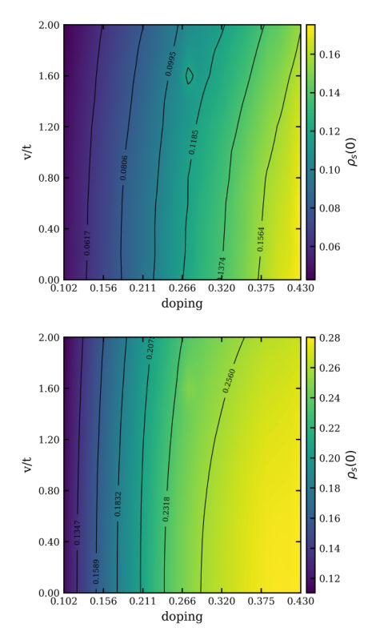
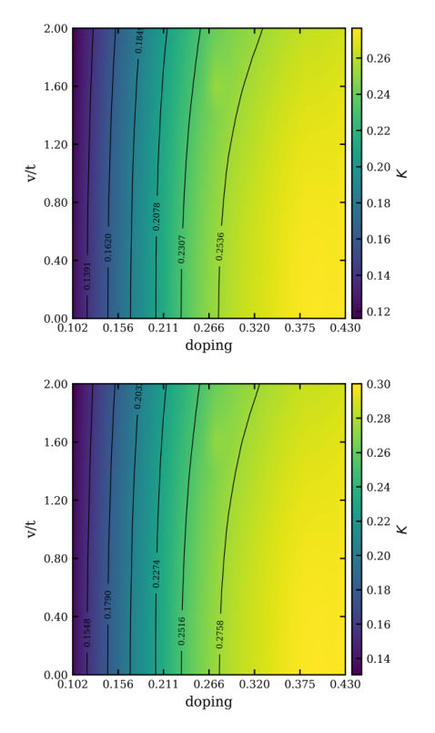
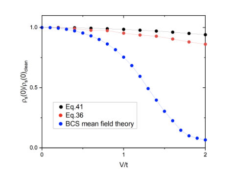
Summary. The paper investigates how disorder affects the superfluid density in cuprate superconductors using a variational RVB approach to the t-J model. It demonstrates that strong correlations protect superconductivity from disorder in the underdoped regime, providing evidence for a Mott transition at the pseudogap end point. This explains the non-monotonic doping dependence of the superfluid density.
Why it may be interesting. not directly relevant
Main problem. Understanding the origin of the pseudogap end point in cuprate superconductors and explaining why the superfluid density reaches a maximum at this critical doping despite a monotonic increase in Drude weight.
Main result. The study finds that d-wave superconductivity in the underdoped regime is remarkably robust against disorder due to intrinsic electron incoherence from strong correlations, whereas the overdoped regime is fragile, supporting a Mott transition at the pseudogap end point.
Method. A two-step variational theory using an unrestricted optimization of a Resonating Valence Bond (RVB) ground state and a construction of a variational state for the paramagnetic current response.
Model / system. The 2D disordered t-J model, which incorporates strong electron correlations and a no-double-occupancy constraint, compared against a BCS mean-field model.
Key observables. Zero-temperature superfluid density (rho_s(0)), Off-Diagonal Long-Range Order (ODLRO), total optical weight (K), and the ratio of superfluid density to optical weight (r).
Important parameters / regimes. Doping concentration (x), disorder strength (V/t), Heisenberg exchange coupling (J/t), and next-nearest-neighbor hopping (t'/t).
Assumptions / limitations. The variational approach is semi-quantitative; the ground state is assumed to be superconducting; the BCS comparison ignores the no-double-occupancy constraint.
Figures summary. Figure 1 shows ODLRO evolution with disorder; Figure 2 maps ODLRO across doping and disorder; Figure 3 shows superfluid density evolution; Figure 6 compares normalized superfluid density between RVB and BCS theories.
Paper structure. The paper introduces the problem of the pseudogap end point, defines the disordered t-J model and the RVB variational framework, details the numerical optimization and current response calculation, compares results with BCS theory, and concludes with implications for the Mott transition.
A major puzzle in the study of the cuprate superconductivity is the origin of the pseudogap end point. Intriguingly, such a critical doping is also where the superfluid density of the system reaches its maximum. A non-monotonic doping dependence of the superfluid density is rather unusual since the Drude weight of the cuprate system is found to increase monotonically with the doping concentration. It is generally believed that such a peculiar behavior should be attributed to both the strongly correlated nature of the cuprate system and the disorder effect. In this work, we develop a variational theory for the zero temperature superfluid density of the disordered $t-J$ model. This is achieved in two steps. First, we perform an unrestricted variational optimization of an RVB variational ground state for the disordered $t-J$ model. Second, we construct the variational state that describes the paramagnetic current response on such an RVB state. The zero temperature superfluid density $ρ_{s}(0)$ is then extracted from the curvature of the variational ground state energy of the system as a function of the external electromagnetic field. We find that $ρ_{s}(0)$ computed in this way is remarkably robust against the disorder effect. More specifically, we find that $ρ_{s}(0)$ is a monotonically increasing function of doping concentration $x$ and scales linearly with the total optical weight. This is consistent with the observation in the underdoped cuprates but is strongly at odd with the behavior in the overdoped cuprates. The strong contrast between the disorder effect in the underdoped and the overdoped regime lends strong support to our previous proposal that there exist a Mott transition between a doped-Mott-insulating metal in the underdoped regime and a fermi-liquid-like metal in the overdoped regime around the pseudogap end point.
Authors: Marcus W Beims, Arlans JS de Lara
Type: theory · Category: other · PDF: https://arxiv.org/pdf/2605.17507v1
Analysis basis: full PDF text, analyzed in chunks
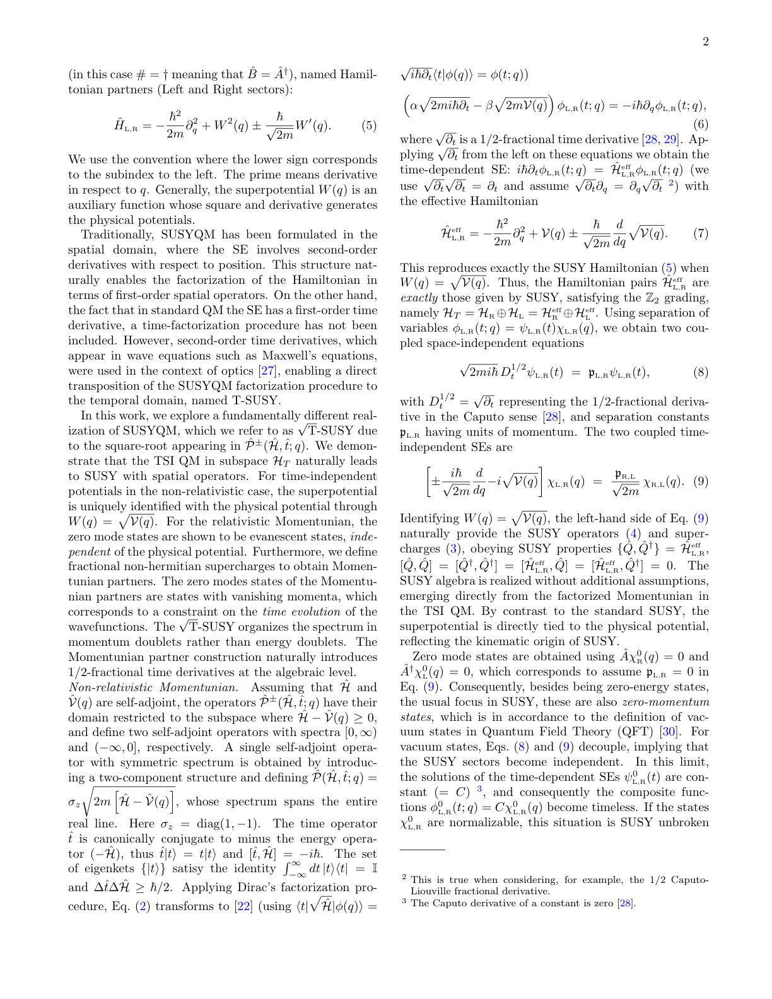
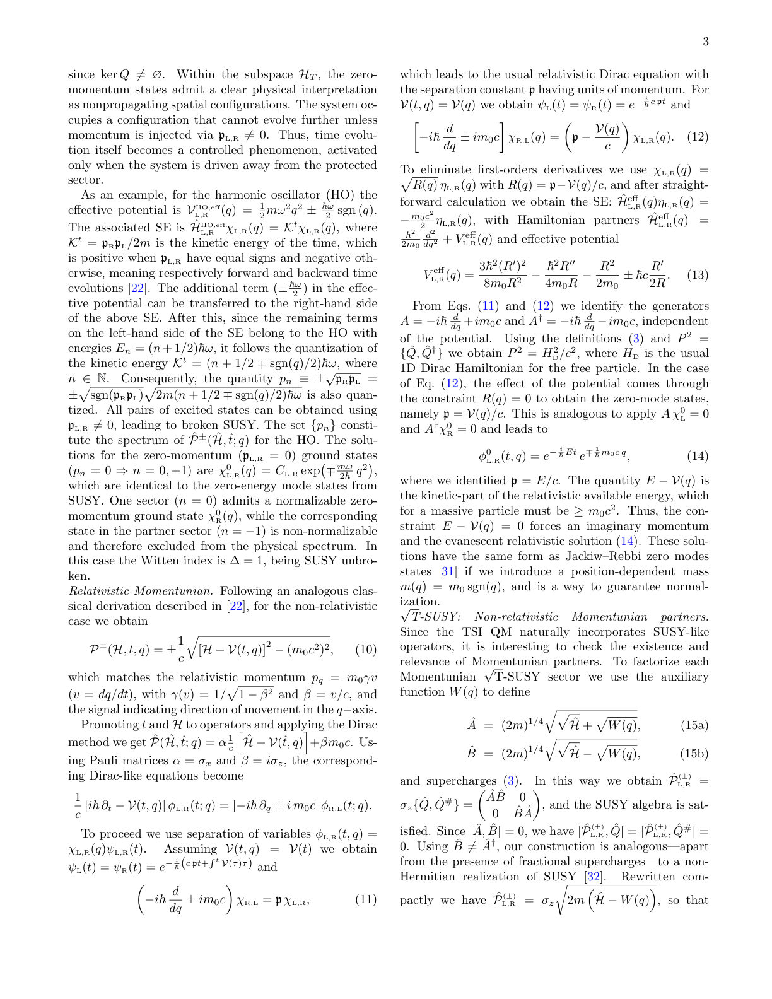
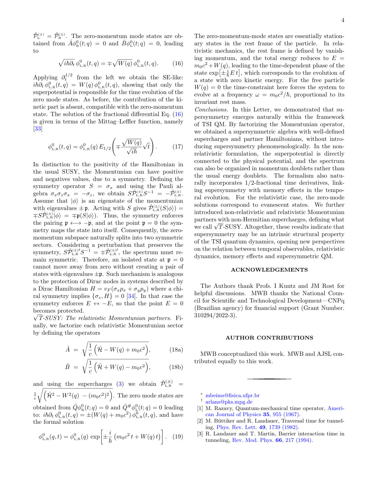
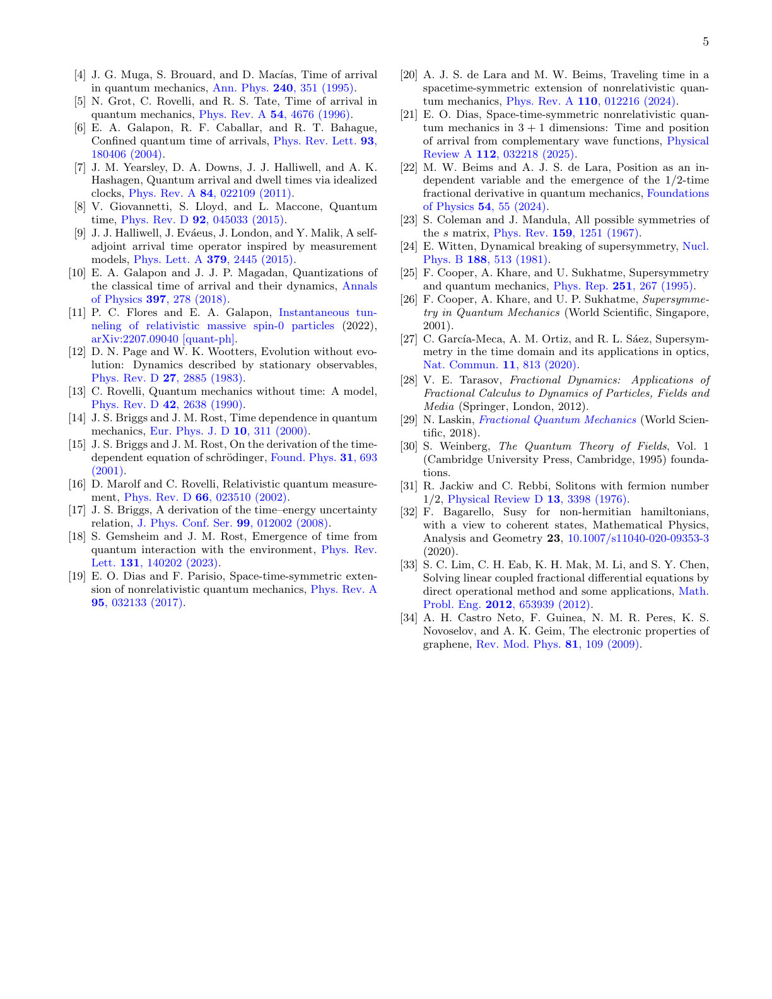
Summary. This paper shows that supersymmetry is an inherent feature of a quantum mechanical framework where space and time roles are inverted. By factorizing a specific 'Momentunian' operator, the authors derive a new class of SUSY that naturally incorporates memory effects through fractional calculus. This suggests that SUSY can be a structural consequence of space-time symmetry rather than an added assumption.
Why it may be interesting. not directly relevant
Main problem. Investigating whether supersymmetry (SUSY) can emerge as an intrinsic structural property of a space-time symmetric framework rather than being imposed phenomenologically.
Main result. The authors demonstrate that supersymmetry emerges naturally from the factorization of the 'Momentunian' operator within the Time-Space Inverted (TSI) quantum mechanics framework, leading to momentum doublets and memory effects via fractional derivatives.
Method. The study employs Dirac's factorization procedure on the Momentunian operator, uses separation of variables for wavefunctions, and applies fractional calculus (Caputo sense) to handle 1/2-fractional time derivatives.
Model / system. The framework is Time-Space Inverted (TSI) quantum mechanics, which treats time as an operator and position as a parameter, encompassing both non-relativistic and relativistic (Dirac-like) regimes.
Key observables. Momentum doublets (p and -p), zero-mode states (zero energy or zero momentum), and the Witten index.
Important parameters / regimes. Kinetic energy of time (Kt), rest mass (m0), speed of light (c), and the 1/2-fractional time derivative.
Assumptions / limitations. The framework assumes a space-time symmetric (STS) structure where the roles of space and time are inverted.
Paper structure. The paper introduces the TSI QM framework, derives the Momentunian operator, demonstrates the factorization leading to emergent SUSY, explores both non-relativistic and relativistic cases, and provides a case study using the Harmonic Oscillator.
This Letter shows that a supersymmetric structure is inherent to the time space inverted (TSI) quantum mechanics (QM) framework, where the spatial evolution of states is generated by the operator $\hat{\mathcal{P}}^{\pm}(\hat{\mathcal{H}},\hat t;q)=\pm\sqrt{2m[\hat{\mathcal{H}}-\mathcal{\hat V}(q)]}$ [\href{https://doi.org/10.1103/PhysRevA.95.032133}{Phys. Rev. A. {\bf 95}, 032133 (2017)}], named here Momentunian, whose square-root structure that can be factorized. Such factorization leads directly to a supersymmetric algebra with supercharges and partner Hamiltonians. For the relativistic Momentunian the zero mode states are shown to be evanescent states, \textit{independent} of the physical potential. Furthermore, the existence of non-relativistic and relativistic Momentunian \textit{partners} is demonstrated, whose zero-mode states are no longer necessarily zero energies, but vanishing momenta states. The natural emergence of the $1/2$-fractional time derivatives in the TSI QM, leads to supercharges which incorporate memory effects into the supersymmetric wave functions. Results indicate that supersymmetry emerges as a structural property of the TSI QM rather than being imposed phenomenologically.
Authors: Mattias Ehatamm, Yi Lee, Xiaodi Wu, Runzhou Tao
Type: theory · Category: quantum information and computing · PDF: https://arxiv.org/pdf/2605.16523v1
Analysis basis: full PDF text, analyzed in chunks
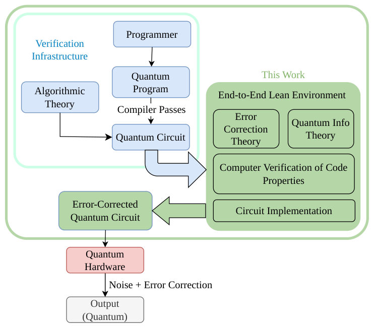
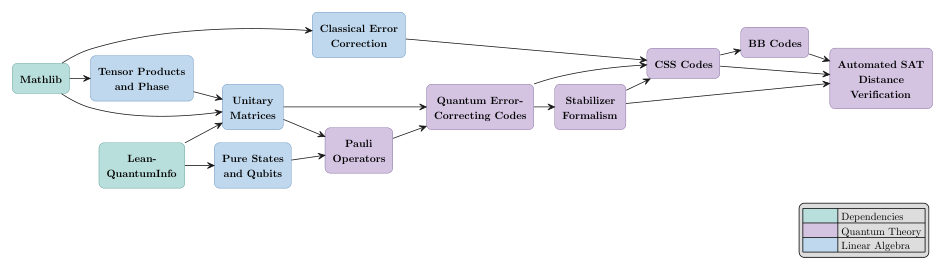
Summary. This paper introduces Lean-QEC, a formal verification framework in Lean 4 that automates the proof of distance bounds for large-scale quantum error-correcting codes. By bridging high-level quantum theory with efficient SAT-based computation, it enables machine-checked certificates for codes that were previously too large for manual or formal verification. This provides a critical layer of trust for the development of fault-tolerant quantum computing.
Why it may be interesting. not directly relevant
Main problem. Certifying the distance of large-scale quantum error-correcting codes (QECCs) is NP-hard, creating a 'trust gap' between unverified symbolic solvers and unscalable manual proofs.
Main result. The authors developed Lean-QEC, a Lean 4 library that provides end-to-end, machine-checked distance certificates for industrial-scale stabilizer codes, including Bivariate Bicycle codes up to 144 qubits.
Method. The framework uses a verified reduction to translate the distance condition into a Boolean satisfiability (SAT) problem, utilizing BitVec-flattened encoding and error-location encoding to ensure scalability within the Lean kernel.
Model / system. The paper focuses on stabilizer codes, specifically CSS and Bivariate Bicycle (BB) families, modeled using the Pauli group and binary symplectic representation.
Key observables. Code distance (d), Pauli weight, and stabilizer generators.
Important parameters / regimes. Scalability up to 144 qubits; specific verified codes include [[90, 8, 10]] and [[70, 6, 9]] BB codes.
Assumptions / limitations. The binary symplectic representation assumes phase information loss is irrelevant for distance arguments; the solver (CaDiCaL) is not trusted, but its output is verified via LRAT certificates.
Figures summary. Figure 1 shows a workflow diagram of the quantum verification hierarchy; Figure 2 maps the formalized QEC stack; Figure 3 illustrates the equivalence of tensor products and unfolded Pauli operators.
Paper structure. The paper introduces the trust gap in QEC, presents the Lean-QEC library architecture, details the mathematical formalization of the Pauli group and stabilizer codes, describes the SAT-based reduction pipeline and optimization techniques, and validates the framework with case studies ranging from the Shor code to large-scale BB codes.
Quantum error-correcting codes (QECCs) sit between noisy quantum hardware and reliable computation, so the code parameters used in practice must be trustworthy. The single number that summarizes a code's strength is its distance, yet certifying a distance lower bound is NP-hard in general, placing it beyond the reach of pen-and-paper proofs as well as direct proof-assistant scripting. As a result, distance values in the literature come either from non-scaling hand proofs, or from unverified solvers that leave a trust gap exactly where the code is supposed to provide a guarantee. We present Lean-QEC, the first Lean 4 formalization of stabilizer-code theory that delivers end-to-end, machine-checked distance certificates at industrial code sizes. Lean-QEC formalizes the linear algebra of qubit states, the Pauli group, stabilizer codes, the binary symplectic representation, classical coding theory, and the CSS and Bivariate Bicycle families. To break the combinatorial barrier, Lean-QEC translates the distance condition into a Boolean satisfiability formula through a verified reduction. The pipeline scales through a BitVec-flattened encoding that replaces Lean's Matrix representation, and an error-location encoding that reduces the variable count from $n$ to $k\lceil \log_2 n\rceil$. With these, we obtain automatically-generated Lean-checked distance proofs for a large range of industrially viable qLDPC codes within the Bivariate Bicycle and Generalized Bicycle families, including [[90, 8, 10]] and [[70, 6, 9]] BB codes, with the formulation scaling up to 144 qubits when performed outside the Lean kernel. The resulting library is reusable and is designed to plug into broader Lean-based efforts toward end-to-end verification of fault-tolerant quantum computation.
Authors: Xun Liu, Chao Deng, Wenfeng Wu, Liang Si, Mi Jiang
Type: theory · Category: strongly correlated electrons · PDF: https://arxiv.org/pdf/2605.17520v1
Analysis basis: full PDF text, analyzed in chunks
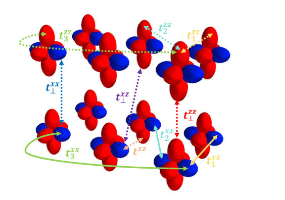
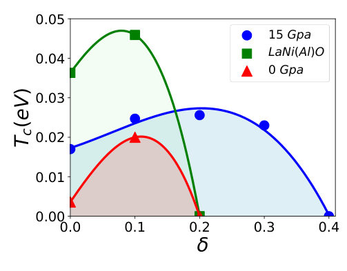
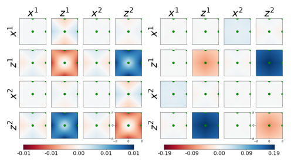
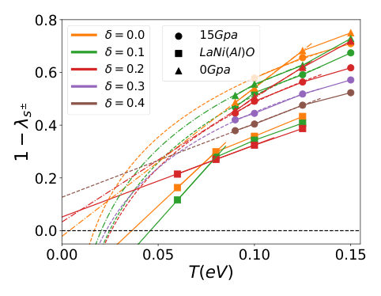
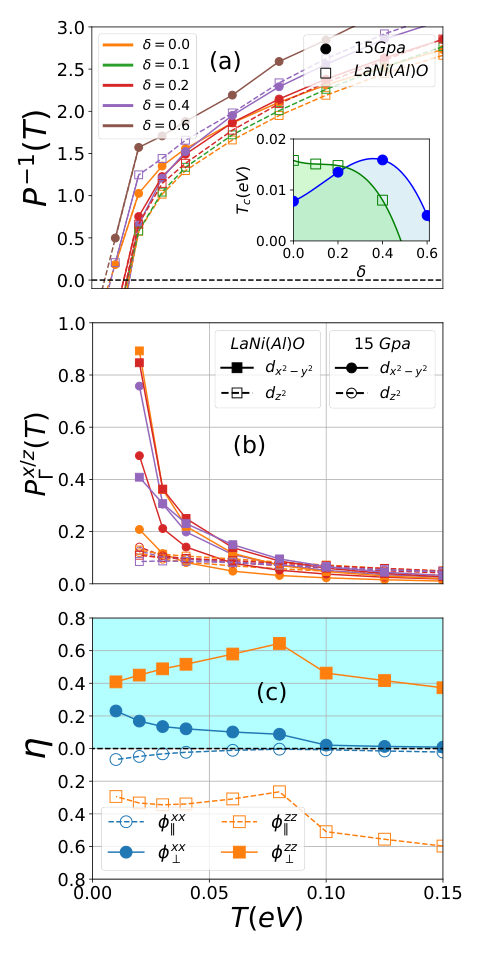
Summary. This paper provides the first theoretical prediction that electron doping enhances superconductivity in Ruddlesden-Popper nickelates. It identifies a cooperative mechanism between d_{x2-y2} and d_{z2} orbitals and suggests that heterostructures could achieve higher transition temperatures. This work offers a new direction for experimentalists seeking to control superconductivity in nickelate-based materials.
Why it may be interesting. not directly relevant
Main problem. Investigating the effect of electron doping on the $s^\pm$-wave superconducting pairing in Ruddlesden-Popper nickelates, specifically addressing the lack of research on the electron-doped regime compared to the hole-doped regime.
Main result. Electron doping generically enhances $s^\pm$-wave superconductivity in bulk La3Ni2O7 and LaNi(Al)O heterostructures, driven by a cooperative mechanism where pairing on the d_{x2-y2} orbital is induced by the d_{z2} orbital.
Method. The study uses first-principles DFT to obtain hopping parameters and large-scale Dynamical Cluster Approximation (DCA) with a continuous-time quantum Monte Carlo (CT-QMC) solver to solve the Bethe-Salpeter equation.
Model / system. A bilayer two-orbital tight-binding model on a 2D square lattice representing La3Ni2O7 at 0 GPa, 15 GPa, and a La3Ni2O7:La3Al2O7 heterostructure, including intra- and inter-orbital Coulomb interactions and Hund's coupling.
Key observables. Superconducting transition temperature (Tc), s+/--wave pairing symmetry, pair-field susceptibility, and orbital-resolved pairing components.
Important parameters / regimes. Electron doping level (delta), pressure (0 GPa vs 15 GPa), Hubbard U (4.0 eV), inter-orbital U' (2.4 eV), and Hund's coupling J (0.8 eV).
Assumptions / limitations. The DCA method approximates long-range physics via a mean-field bath, and the self-energy is assumed to be constant within each Brillouin zone patch.
Figures summary. Figure 1 shows a schematic of the bilayer two-orbital model; Figure 4 illustrates the temperature dependence of the BSE eigenvalue for different doping levels under various pressure/heterostructure conditions.
Paper structure. The paper introduces the problem of electron doping in nickelates, describes the DFT-derived two-orbital model and DCA methodology, presents results on Tc enhancement and orbital-resolved pairing, and concludes with the proposed inter-orbital cooperative mechanism.
In cuprates, electron doping yields a much lower superconducting $T_c$ than hole doping. For recently discovered nickelate superconductors, the analogous doping strategies become more challenging. Consequently, while hole-doped Ruddlesden-Popper (RP) nickelates have been extensively studied, electron-doped RP nickelates remain rarely explored both experimentally and theoretically. Here we fill this gap by systematically investigating the two-orbital bilayer model for three representative systems: bulk La$_3$Ni$_2$O$_7$ at ambient pressure and 15\,GPa, and a heterostructure La$_3$Ni$_2$O$_7$:La$_3$Al$_2$O$_7$ that provides a feasible experimental route to electron doping. Using first-principle calculations and large-scale dynamical cluster quantum Monte Carlo simulations, we find that electron doping generically enhances $s^\pm$-wave pairing superconductivity (SC) in all three cases, with the heterostructure showing the highest $T_c$ in the underdoped regime. Furthermore, our results suggest an inter-orbital cooperative mechanism that the pairing on the $d_{x^2-y^2}$ orbital, induced by that on the $d_{z^2}$ orbital, plays vital role in the SC. This work provides the first theoretical prediction of enhanced SC in electron-doped RP nickelates and calls for future experimental verification.
Authors: Juan A. Cañas, Daniel A. Bonilla, J. Bernal, A. Martín-Ruiz
Type: theory · Category: other · PDF: https://arxiv.org/pdf/2605.16518v1
Analysis basis: full PDF text, analyzed in chunks
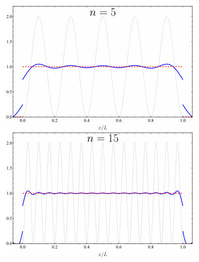
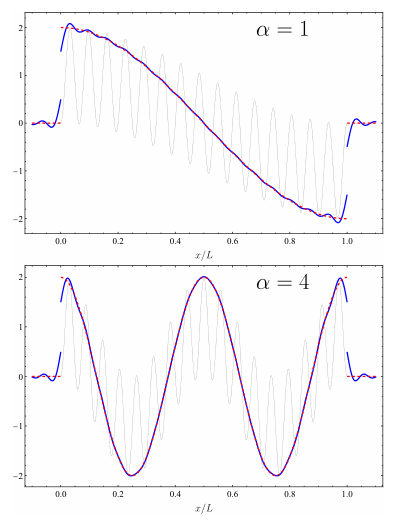
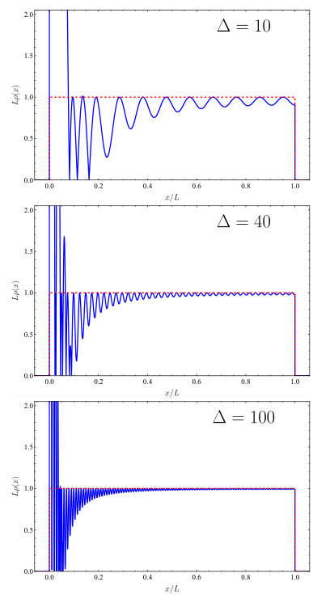
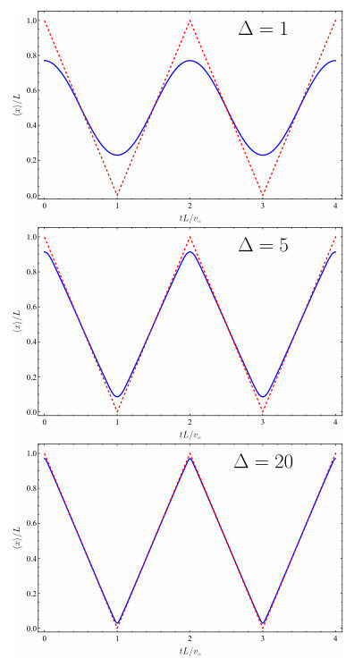
Summary. This paper provides a rigorous mathematical proof that classical behavior emerges from high-energy quantum superpositions without needing environmental decoherence. It demonstrates that even though quantum interference terms persist, they organize into a smooth envelope that recovers classical probability and trajectories in the macroscopic limit.
Why it may be interesting. not directly relevant
Main problem. Investigating the validity of the correspondence principle for high-energy quantum superpositions, specifically whether persistent interference terms prevent the convergence of quantum probability density to classical density.
Main result. The authors prove that while interference terms do not vanish, they organize into a functional envelope that allows the total probability density and position expectation value to converge exactly to classical distributions in the large-n and large-Delta limits.
Method. A fully analytical Fourier-based approach using asymptotic expansions, geometric series of quantum Fourier coefficients, and special functions like the Lerch transcendent and polylogarithms.
Model / system. An isolated, one-dimensional infinite square well containing a particle in an equiprobable superposition of high-energy eigenstates.
Key observables. Quantum probability density (QPD), classical probability density (CPD), and the expectation value of position
Important parameters / regimes. High-energy limit (n -> infinity), number of superposed states (Delta -> infinity), and spatial/momentum resolution scales.
Assumptions / limitations. The system is an isolated bound system without environmental decoherence; the superposition is assumed to be equiprobable.
Figures summary. Figure 1 shows the convergence of QPD to CPD for different n; Figure 2 illustrates interference terms acting as an asymptotic envelope; Figure 3 shows the approach to classical distribution as Delta increases; Figure 4 compares the time evolution of
Paper structure. The paper begins by defining the problem of the correspondence principle in superpositions, moves to a Fourier-based analytical framework, derives asymptotic expressions for interference and density, proves convergence in the large-Delta limit, and concludes with dynamical verification via position expectation values.
We examine the correspondence principle for an equiprobable superposition of high-energy eigenstates of the infinite square well using a fully analytical Fourier-based approach. We derive a closed-form asymptotic expression for the interference terms $ρ_α^{\text{a}}(x)$ by expanding them into a geometric series of quantum Fourier coefficients. We show these terms act as functional envelopes that do not vanish individually but become asymptotically equivalent in the large-$n$ limit. Furthermore, we prove the total probability density for a superposition of $2Δ+1$ states converges exactly to the uniform classical distribution as $Δ\to \infty$. Dynamically, the expectation value of position reproduces the classical triangular trajectory asymptotically. Residual quantum deviations remain confined to boundary layers whose relative width vanishes under macroscopic resolution. These results establish a rigorous asymptotic realization of the classical limit for isolated bound systems in both static and dynamical contexts.
Authors: Pavel Khrapov, Nikita Volkov
Type: theory · Category: statistical mechanics · PDF: https://arxiv.org/pdf/2605.17600v1
Analysis basis: full PDF text, analyzed in chunks
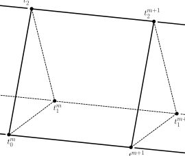
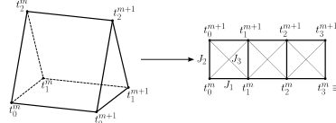
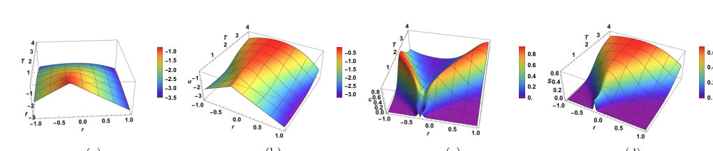
Summary. This paper provides an exact analytical solution for a complex 1D-like Ising tube with various multi-spin interactions. It characterizes the thermodynamic properties and phase transitions of the system, specifically highlighting interesting residual entropy behaviors in the gonihedric limit.
Why it may be interesting. not directly relevant
Main problem. Obtaining an exact solution and pair correlation functions for a generalized three-chain Ising tube (TCGIT) with multispin interactions.
Main result. The authors derive the exact partition function, thermodynamic quantities (free energy, magnetization, etc.), and pair correlation functions, including identifying a residual entropy in the gonihedric limit.
Method. The transfer-matrix formalism is used with an 8x8 matrix, employing symmetry exploitation, Ferrari's method for quartic equations, and the Perron-Frobenius theorem.
Model / system. A quasi-one-dimensional three-chain Ising tube with toroidal boundary conditions, featuring a C3-invariant Hamiltonian with 20 independent coupling constants and multispin interactions.
Key observables. Partition function, free energy, internal energy, specific heat, magnetization, magnetic susceptibility, entropy, and pair correlation functions.
Important parameters / regimes. Temperature (T), external magnetic field (h), and 20 independent coupling constants; includes thermodynamic and low-temperature limits.
Assumptions / limitations. The Hamiltonian is restricted to C3-invariant interactions and the system assumes toroidal boundary conditions.
Figures summary. Figure 1 shows the lattice structure; Figure 2 shows the unfolded planar lattice; Figures 3 and 4 plot thermodynamic quantities and entropy for the gonihedric model; Figures 7-12 map out ground-state phase diagrams and correlation length behavior.
Paper structure. The paper introduces the TCGIT model, applies the transfer-matrix method and symmetry reductions, derives exact thermodynamic quantities and correlation functions, analyzes special cases like the gonihedric and triangular models, and concludes with a detailed ground-state phase diagram analysis.
We obtain an exact solution for a generalized three-chain Ising tube (TCGIT) of length $L$ with toroidal boundary conditions and the most general $C_3$-invariant Hamiltonian on an elementary prism, containing 20 independent coupling constants, including an external magnetic field. Using an $8\times 8$ transfer matrix, we derive the exact partition function of the finite system and obtain the free energy, internal energy, specific heat, magnetization, magnetic susceptibility, and entropy in the thermodynamic limit $L\to\infty$. In the general case, $λ_{\max}$ is determined by a quartic equation, whereas in the principal special case with even-spin interactions (PSC) the spectrum simplifies substantially: the characteristic polynomial factorizes, and $λ_{\max}$ is given by the root of a quadratic equation. For mirror-symmetric subfamilies, we derive explicit formulas for the pair correlation functions and express the magnetization in terms of the components of the eigenvector associated with $λ_{\max}$; in the even-spin case with $h=0$, the magnetization vanishes. Important special cases include the width-three planar model with nearest-neighbor, next-nearest-neighbor, and plaquette interactions, including the entropy limit $S(T\to0^+)=(\ln 2)/3$ for $k\ge 0$ and $S(T\to0^+)=0$ for $k<0$, as well as the width-three planar triangular model with distinct nearest-neighbor couplings, three-spin interactions involving neighboring triangles, and an external field.
Authors: Simon Thelen, Wolfgang Mauerer
Type: theory · Category: quantum information and computing · PDF: https://arxiv.org/pdf/2605.16955v1
Analysis basis: full PDF text, analyzed in chunks
Summary. The authors present DQI-Kit, a new software framework designed to automate the complex process of mapping industrial optimization problems into a format suitable for the Decoded Quantum Interferometry algorithm. By providing a unified interface for encoding constraints, the tool helps identify efficient transformation paths and estimate quantum advantage potential while mitigating performance-degrading overheads.
Why it may be interesting. not directly relevant
Main problem. The difficulty of transforming complex, domain-specific optimization problems (like MILP or SAT) into the Max-LINSAT format required for Decoded Quantum Interferometry (DQI) without introducing massive overheads or performance-degrading linear dependencies.
Main result. The introduction of DQI-Kit, a software framework that automates the encoding of high-level constraints into DQI-compatible Max-LINSAT instances and provides tools to estimate expected quantum performance.
Method. The framework uses a multi-layered abstraction approach (MaxConstraintSat to MaxLinSat) to apply mathematical transformations, such as linearization, gadget-based encoding, and auxiliary variable introduction, to map objectives and constraints to finite field operations.
Model / system. The mathematical model is based on Decoded Quantum Interferometry (DQI), which utilizes the decoding of error-correcting codes over finite fields (Max-LINSAT and Max-XORSAT) to approximate solutions to combinatorial optimization problems.
Key observables. Expected number of satisfied constraints and the approximation performance of the DQI algorithm.
Important parameters / regimes. Minimum distance (d_min) of the underlying code, the ratio of error weight to constraints (l/m), the field order (p), and the polynomial degree (l).
Assumptions / limitations. The framework assumes that the performance of DQI can be estimated analytically or via sampling, and it acknowledges that current hardware cannot yet execute these industrial-scale instances.
Figures summary. Figure 1 shows a transformation map from various problem types to DQI formats; Figure 2 illustrates integer constraint encoding; Figure 3 displays the software architecture hierarchy; Figure 4 demonstrates code usage for different problem classes.
Paper structure. The paper introduces the encoding challenge, presents the DQI-Kit software architecture and abstraction layers, details specific mathematical transformation techniques for various constraints, analyzes the impact of these transformations on performance (identifying 'bad' structures), and concludes with future directions for standardization.
Trying to solve hard optimisation problems with quantum techniques requires transformations of domain objectives and constraints into formats compatible with a chosen quantum algorithm. This often introduces inefficiencies and overheads that limit or even endanger potential quantum advantage for current and future approaches. To understand and mitigate these inefficiencies, software toolchains are essential for implementing transformations, analysing overheads and eventually selecting optimal transformation paths. Decoded Quantum Interferometry (DQI) is a novel approach that achieves apparent quantum advantage for certain algebraic optimisation problems. It natively operates on Max-LINSAT, which is unusual for combinatorial optimisation, and creates the need for software solutions that alleviate the burden of manually transforming problems of interest into this format. We present DQI-Kit, a software framework that provides a unified, extensible interface for automatically encoding constrained optimisation problems into Max-LINSAT. Users can describe the various types of objectives and constraints that are common in industrial optimisation problems. Our framework converts these into Max-LINSAT instances via a series of problem transformations and computes an estimate of the expected performance of DQI on these instances. We provide an initial analysis of the implemented transformations, discussing inefficiencies and ways to mitigate them. DQI-Kit is the basis for our ultimate goal of establishing a standardised framework that will enable further investigations to identify practical use cases for which quantum advantage with DQI can be achieved.
Authors: Xiaodong Wang, Ping Xu, Jiong Mei, Shao-Hang Shi, Zi-Xiang Li, Mingpu Qin, Kun Jiang, Hui-Ke Jin
Type: theory · Category: strongly correlated electrons · PDF: https://arxiv.org/pdf/2605.18453v1
Analysis basis: full PDF text, analyzed in chunks
Summary. This paper provides a unified theory for the magnetic phase transitions in cuprates by showing that hole-doped Zhang-Rice singlets induce magnetic frustration through new exchange pathways. This mechanism explains the rapid destruction of antiferromagnetism and the emergence of a spin-glass phase in hole-doped cuprates, distinguishing them from the more stable electron-doped counterparts.
Why it may be interesting. not directly relevant
Main problem. The paper seeks to explain the microscopic mechanism behind the magnetic electron-hole asymmetry in cuprates, specifically why hole doping rapidly destroys Neel antiferromagnetism and induces a spin-glass phase compared to the more robust order in electron-doped systems.
Main result. The authors propose that localized Zhang-Rice singlets in hole-doped cuprates act as 'dressed vacancies' that introduce frustrating next-nearest (J2) and third-nearest (J3) neighbor superexchanges, leading to the rapid collapse of AFM order and the emergence of a spin-glass phase.
Method. The study employs Variational Monte Carlo (VMC) with a Gutzwiller-projected trial wavefunction, Density Matrix Renormalization Group (DMRG) for benchmarking, and Classical Monte Carlo simulations on 3D lattices to study finite-temperature phase transitions.
Model / system. The system is the lightly doped regime of cuprate charge-transfer insulators, modeled via an effective spin-1/2 Heisenberg Hamiltonian on a 2D square lattice with emergent J2 and J3 couplings for hole doping, and simple site dilution for electron doping.
Key observables. Staggered magnetization (Mz), static spin structure factor S(q), Binder ratio (B), and the Edwards-Anderson order parameter (q_SG).
Important parameters / regimes. Exchange couplings J1=1, J2=0.5, J3=1.25; interlayer coupling J_perp=0.1; doping levels delta (positive for holes, negative for electrons).
Assumptions / limitations. The theory assumes that doped holes form spatially localized Zhang-Rice singlets that can be treated as effective magnetic impurities with extended exchange pathways.
Figures summary. The figures likely illustrate the evolution of the spin structure factor, the crossing of Binder ratio curves to identify phase transitions, and the comparison of magnetization decay between electron and hole doping.
Paper structure. The paper introduces the problem of magnetic asymmetry, presents a unified microscopic theory based on the Emery model, details the numerical methods (VMC, DMRG, Monte Carlo), presents results for both doping types, and concludes with implications for experimental probes like STM.
The microscopic mechanism by which doped holes disrupt the antiferromagnetic order is one of the fundamental questions in cuprates. In this work, we propose a unified microscopic theory in which doped holes form spatially localized Zhang-Rice singlets which actively mediate emergent spin exchange. Rather than acting as simple non-magnetic vacancies, these localized states introduce emergent next-nearest $J_2$ and third-nearest $J_3$ neighbor superexchanges. This dopant-induced exchange pathway generates significant magnetic frustration, naturally explaining the rapid collapse of the Néel AFM order and the emergence of a spin-glass phase on the hole-doped side. Our findings provide a comprehensive framework for understanding the complex doping-driven magnetic phase transitions and magnetic electron-hole asymmetry in lightly doped cuprates.
Authors: Kun Zhang, Lei Ding, Sheng-Chen Bai, Jing Sun, An-Qi Jing, Min Tang, Shi-Ju Ran
Type: theory · Category: numerical methods · PDF: https://arxiv.org/pdf/2605.17895v1
Analysis basis: full PDF text, analyzed in chunks
Summary. This paper introduces a machine learning framework that performs prototype learning directly within a quantum Hilbert space using Matrix Product States. By treating class representatives as quantum states, the method enables classification and anomaly detection through geometric measures like fidelity, offering a more interpretable alternative to black-box neural networks.
Why it may be interesting. not directly relevant
Main problem. The lack of interpretability in black-box deep neural networks and the need for a machine learning framework that utilizes the geometric structure of Hilbert space for transparent decision-making.
Main result. The proposed Quantum-Probabilistic Prototype Learning (QPPL) framework outperforms classical prototype methods and is competitive with deep neural networks in tasks like ECG classification and Fashion-MNIST, while providing an explainable, geometric approach to classification and anomaly detection.
Method. Classical data is mapped into quantum product states via a feature map, and class representatives are learned as generative Matrix Product States (MPS) by minimizing the Negative Logarithmic Fidelity (NLF) between samples and prototypes.
Model / system. The framework uses a quantum Hilbert space where data samples are represented as product states of $M$ spins and class prototypes are encoded as Matrix Product States (MPS) with a specific bond dimension $\chi$.
Key observables. Negative Logarithmic Fidelity (NLF), Accuracy, AUROC, Silhouette Coefficient, and Davies-Bouldin index.
Important parameters / regimes. Bond dimension ($\chi$), local dimension ($d$), and the rotation parameter ($ heta$) in the quantum feature map.
Assumptions / limitations. The method assumes that classical data can be effectively mapped into a quantum Hilbert space via a predefined feature map and that the NLF metric is suitable for avoiding exponential fidelity decay.
Figures summary. Figure 1 compares Euclidean distance in classical space to NLF distance in quantum Hilbert space, demonstrating superior cluster separation and the effectiveness of the MPS-based metric.
Paper structure. The paper introduces the problem of NN opacity, proposes the QPPL framework using MPS, details the feature mapping and NLF distance metric, presents benchmarks on ECG and Fashion-MNIST datasets, and discusses dimensionality reduction and clustering results.
Quantum probability provides a novel framework for formulating machine-learning (ML) problems in Hilbert space. We introduce a prototype-based learning scheme where class representatives are encoded as generative matrix product states (MPS). Because these prototypes reside in the same Hilbert space as quantum-encoded data samples, various ML tasks such as classification and clustering can be performed through geometric measures of quantum states. This approach lifts prototype learning from classical feature space to quantum Hilbert space. Benchmarks on Fashion-MNIST and a real-world electrocardiogram dataset demonstrate that our method outperforms classical prototype approaches while remaining competitive with standard black-box neural networks. We also identify an ``attraction'' effect induced by the quantum-probabilistic prototypes and introduce a dimensionality-reduction scheme based on prototype distances. Our results establish quantum states as an explainable framework for prototype learning, opening new directions for designing ML algorithms in quantum Hilbert space.
Authors: Isabella Cerutti, Petra F. Scudo
Type: theory · Category: other · PDF: https://arxiv.org/pdf/2605.18440v1
Analysis basis: full PDF text, analyzed in chunks
Summary. This paper provides a new geometric derivation for the Wigner angle associated with Lorentz transformations of massless particles like photons. By treating the transformations as paths on a unit sphere, the authors derive an explicit formula for the angle and connect it to the topological Berry phase. This clarifies the relationship between relativistic kinematics and geometric phases.
Why it may be interesting. not directly relevant
Main problem. Deriving a closed-form analytical expression for Wigner's angle for arbitrary Lorentz transformations of massless particles and addressing the non-uniqueness of this angle.
Main result. The authors provide a complete analytical derivation of the Wigner matrix and a closed formula for the Wigner angle, linking it to spherical trigonometry and the topological Berry phase.
Method. A geometric approach using quaternion algebra, spherical trigonometry (including the spherical law of cosines and Gauss-Bonnet theorem), and the polar decomposition of Lorentz transformations.
Model / system. Massless particles, specifically photons, within the framework of Special Relativity and the unitary irreducible representations of the Poincaré group.
Key observables. Wigner angle (phi_W), Wigner matrix (W), helicity (sigma), and Wigner rotation axis.
Important parameters / regimes. Rotation axes (n_i), rotation angles (phi_i), relative velocities (v), and helicity (sigma).
Assumptions / limitations. The work is confined to the framework of Special Relativity and does not account for gravitational effects; the initial 4-momentum is assumed to be in a standard form.
Figures summary. Figure 1a shows the non-uniqueness of rotation axes; Figure 1b illustrates the spherical and polar triangles in momentum space; Figure 2 shows the Wigner angle as a function of the angle between momentum vectors; Figure 3 compares the Wigner angle to Thomas precession; Figure 4 shows the Wigner angle varying with a rotation parameter theta.
Paper structure. The paper introduces the problem of Wigner's angle, provides a geometric derivation using quaternions and spherical trigonometry, presents closed-form analytical results, and concludes with numerical validation and comparisons to known effects.
This note summarizes the physics and mathematics of Lorentz transformations for massless particles, specifically for photons. We provide a complete analytical derivation of Wigner's little group matrix and a closed formula for the calculation of Wigner's angle for arbitrary Lorentz transformations. Our derivation highlights the geometrical content of the sequence of little group transformations leading to Wigner's matrix and links it to classical theorems in spherical trigonometry.
Authors: Akira Onuki
Type: theory · Category: statistical mechanics · PDF: https://arxiv.org/pdf/2605.17346v1
Analysis basis: full PDF text, analyzed in chunks
Summary. This paper explores how confining electrolytes between electrodes under a fixed potential creates long-range, global correlations in electric fields and charge densities. It demonstrates that these correlations depend heavily on the ratio between film thickness and the Debye screening length, providing a new way to calculate effective dielectric constants.
Why it may be interesting. not directly relevant
Main problem. Investigating the thermal fluctuations and global space correlations of polarization, charge density, and electric field in dilute electrolytes under a fixed-potential boundary condition.
Main result. The study identifies that for thin films (H < kappa^-1), correlations acquire global components inversely proportional to volume, and establishes an expression for the effective dielectric constant based on fluctuation variances.
Method. The author uses a Ginzburg-Landau type free energy functional, Legendre transformations between fixed-charge and fixed-potential ensembles, and Green's function methods within linear response theory.
Model / system. A dilute electrolyte (ions and polar fluids) confined in a slab of thickness H between two parallel metallic electrodes, modeled as a continuum theory of an incompressible polar liquid.
Key observables. Polarization (p), charge density (rho), electric field (E), surface charge density (sigma), and effective dielectric constant (epsilon_eff).
Important parameters / regimes. Film thickness (H), Debye screening length (kappa^-1), surface electric length (ell_w), and applied potential difference (Phi_a).
Assumptions / limitations. The system is in the dilute limit, the liquid is nearly incompressible, edge effects are negligible, and the dielectric constant is assumed to be high (epsilon >> 1).
Figures summary. Figure 1 shows the electrolyte geometry and distribution of physical quantities; Figure 5 shows polarization variance vs. kappa*H; Figure 6 and 7 illustrate Green function distributions and charge correlation patterns.
Paper structure. The paper introduces the physical system and boundary conditions, defines the thermodynamic framework and free energy functional, derives correlation functions using Green's functions, analyzes specific thickness regimes (thin vs. thick films), and concludes with implications for effective dielectric properties.
We examine the thermal fluctuations of the polarization $p$, the charge density $ρ$, and the electric field $E$ in dilute electrolytes inserted between pararell metallic electrodes, where we fix the applied potential difference $Φ_a$ between the two electrodes. If the film thickness $H$ is shorter than the Debye screening length $κ^{-1}$, the space correlation of the polarization $p_z$ and the electric field $E_z$ along the surface normal (in the $z$ direction) acuire global components inversely proportional to the film volume $V$, which vary slowly along the $z$ axis and are homogeneous in the $xy$ plane. The areal charge density on each electrode surface also has a component homogeneous on the surface, which produces the global electric fluctuations. On the other hand, if $H$ much exceeds $κ^{-1}$, the global correlations of $p_z$ and $ρ$ become small in the bulk region outside the electric double layers, but that of $E_z$ remains almost unchanged by ions in the whole cell at fixed $Φ_a$. The dielectric constant $ε_{\rm eff}$ depends on $H$ and $κ$ and is expressed in terms of the fluctuation variances of $p_z$ and $ρ$ and that of the noblocal surface charge density at fixed $Φ_a$.
Authors: Alberto Marchisio, Muhammad Kashif, Nouhaila Innan, Muhammad Shafique
Type: theory · Category: quantum information and computing · PDF: https://arxiv.org/pdf/2605.18345v1
Analysis basis: full PDF text, analyzed in chunks
Summary. This paper proposes an automated, hardware-aware method for designing hybrid quantum-classical neural networks. By using a genetic algorithm to optimize for both accuracy and computational cost (FLOPs), the researchers demonstrate how to find efficient architectures for the NISQ era.
Why it may be interesting. not directly relevant
Main problem. The difficulty of manually designing efficient Hybrid Quantum-Classical Neural Network (HQNN) architectures due to the high sensitivity of performance to architectural choices and the need to balance accuracy with computational efficiency.
Main result. The study identifies Pareto-optimal architectures using a FLOPs-aware approach, demonstrating that high accuracy can be achieved even with low computational costs and that accuracy improvements are primarily driven by quantum FLOPs.
Method. The authors employ the NSGA-II (Non-dominated Sorting Genetic Algorithm II) to perform a multi-objective evolutionary search across a discrete space of quantum circuit parameters.
Model / system. The model is a Hybrid Quantum-Classical Neural Network (HQNN) consisting of classical preprocessing, Parameterized Quantum Circuits (PQCs) acting as trainable layers, and classical post-processing.
Key observables. Predictive accuracy, cross-entropy loss, and computational complexity measured via FLOPs (Floating Point Operations).
Important parameters / regimes. Qubit count (2-10), data encoding (angle, amplitude), rotation gates (Rx, Ry, Rz), entangling gates (CNOT, CZ), entanglement topology (linear, circular), and circuit depth (1-4).
Assumptions / limitations. The use of FLOPs serves as a valid hardware-agnostic proxy for the computational complexity of simulating quantum circuits on classical hardware.
Figures summary. Figure 1 shows the HQNN workflow; Figure 2 depicts the NAS workflow; Figure 3 details the FLOPs-aware NAS methodology; Figures 4 and 5 show accuracy vs. FLOPs trade-offs for the Iris and Digits datasets.
Paper structure. The paper introduces the problem of HQNN design, defines the search space and components, reviews existing NAS strategies, proposes a specific FLOPs-aware NSGA-II methodology, presents experimental results on benchmark datasets, and discusses limitations and future work.
Hybrid quantum-classical neural networks (HQNNs) are emerging as a practical approach for quantum machine learning in the noisy intermediate-scale quantum (NISQ) era, as they combine classical learning components with parameterized quantum circuits in an end-to-end trainable framework. However, their performance and efficiency depend strongly on architectural choices such as data encoding, circuit structure, measurement design, and the coupling between classical and quantum modules. This makes manual design increasingly difficult, especially when hardware limitations and resource constraints must also be taken into account. In this paper, we study the foundations of HQNNs and neural architecture search (NAS), discuss how NAS extends to quantum and hybrid settings, and demonstrate FLOPs-aware search (where FLOPs serve as a proxy for computational complexity), as an important hardware-aware direction for building HQNNs that are not only accurate but also computationally efficient and practically deployable.
Authors: Feiyang Liu, Lixing Chen, Enkang Zhang, Ying-Jie Zhang, Jun Zhao
Type: experiment · Category: strongly correlated electrons · PDF: https://arxiv.org/pdf/2605.18524v1
Analysis basis: full PDF text, analyzed in chunks
Summary. This paper reveals that Ruddlesden-Popper nickelates possess much higher electronic anisotropy than previously thought. It demonstrates that interlayer electronic coherence acts as a key parameter that links magnetic/density-wave orders to the emergence of superconductivity.
Why it may be interesting. not directly relevant
Main problem. The study aims to determine how electronic dimensionality influences magnetism and superconductivity in Ruddlesden-Popper nickelates and to resolve discrepancies in previously reported resistivity anisotropy.
Main result. The researchers discovered much higher intrinsic resistivity anisotropy than previously reported and found that stronger interlayer electronic coherence is positively correlated with higher superconducting transition temperatures.
Method. High-precision DC transport measurements were performed using a six-terminal geometry on high-quality single crystals to self-consistently determine in-plane and out-of-plane resistivities.
Model / system. The physical system consists of Ruddlesden-Popper nickelate single crystals, specifically bilayer (La3Ni2O7) and trilayer (La4Ni3O10, Pr4Ni3O10) structures, characterized by Ni-O layers and multi-orbital (Ni 3d) electronic structures.
Key observables. In-plane resistivity (rho_parallel), out-of_plane resistivity (rho_perp), resistivity anisotropy ratio (gamma_rho), and superconducting transition temperature (Tc).
Important parameters / regimes. Temperature (T), resistivity anisotropy ratio, effective penetration depth (zeff), and the coherent-to-incoherent transport crossover.
Assumptions / limitations. The extraction of intrinsic resistivities assumes a mathematical model to account for non-uniform current distribution in highly anisotropic conductors.
Figures summary. Fig 1 shows the six-terminal measurement setup and current distribution; Fig 2 displays temperature-dependent resistivities for various nickelates; Fig 3 confirms Fermi-liquid behavior at low temperatures; Fig 4 shows the temperature dependence of anisotropy and its correlation with Tc.
Paper structure. The paper introduces the problem of dimensionality in nickelates, describes the six-terminal experimental method, presents the discovery of high anisotropy and transport crossovers, and concludes by correlating interlayer coherence with superconductivity.
The extent to which electronic dimensionality influences magnetism and superconductivity in Ruddlesden-Popper (RP) nickelates remains unsettled. Here we report high-precision crystallographic-axis-resolved dc transport measurements on high-quality single crystals of bilayer and trilayer RP nickelates. Using a six-terminal geometry, we self-consistently determine the intrinsic in-plane ($ρ_\parallel$) and out-of-plane ($ρ_\bot$) resistivities on the same crystal, while minimizing uncertainties associated with current redistribution in highly anisotropic conductors. We uncover strong intrinsic electronic anisotropy in both bilayer and trilayer nickelates, in contrast to the weak anisotropy inferred from conventional four-probe measurements. Moreover, $ρ_\bot$ exhibits a nonmonotonic temperature dependence, revealing a universal coherent-to-incoherent crossover in interlayer transport. Across the RP nickelate series, the maximum superconducting transition temperature ($T_c$) observed under pressure is inversely correlated with the ambient-pressure resistivity anisotropy, suggesting that stronger interlayer electronic coherence is favorable for superconductivity. In addition, $ρ_\bot$ serves as an exceptionally sensitive and selective probe of magnetic and density-wave orders, exhibiting pronounced anomalies, whereas only weak signatures are observed in $ρ_\parallel$. Our results highlight interlayer coherence as a key organizing parameter that both tracks the relevant magnetic correlations and is closely tied to superconductivity, providing stringent constraints on microscopic theories of high-$T_c$ superconductivity in nickelates.
Authors: Marzena Ciszak
Type: theory · Category: statistical mechanics · PDF: https://arxiv.org/pdf/2605.17622v1
Analysis basis: full PDF text, analyzed in chunks
Summary. This paper proposes that the distribution of prime numbers is not purely random but follows a deterministic iterative map and a cohomological structure. By treating primes as states in a dynamical system, the author shows that the logarithmic integral function emerges as a solution to the governing evolution equation. This provides a new way to link number theory to the statistical mechanics of complex, correlated systems.
Why it may be interesting. not directly relevant
Main problem. The paper seeks to understand the underlying mechanisms governing the irregularities in the sequence of prime numbers and determine if their distribution exhibits a deterministic structure linked to physical systems.
Main result. The authors demonstrate that prime gaps follow an iterative map and that the fluctuations around this trend are governed by a well-defined cohomological structure, with the logarithmic integral function serving as a solution.
Method. The study uses statistical analysis of tau-gaps, residual analysis (subtractive and relative), and fitting prime distributions to Gamma distributions, alongside asymptotic analysis of a proposed cohomological equation.
Model / system. The prime number sequence is modeled as a dynamical system exhibiting long-range correlations, where primes are treated as states of a system governed by a non-stationary, parametrically driven process and a cohomological equation.
Key observables. tau-gaps (d_tau), relative residuals (r), subtractive residuals (s), and the error term (epsilon).
Important parameters / regimes. gap distance (tau), prime index (n), shape parameter (alpha), and the decay rate (lambda).
Assumptions / limitations. The analysis assumes the prime sequence can be treated as a system with a smooth backbone and that the asymptotic behavior of the error term can be modeled via the Mean Value Theorem and Stirling's formula.
Figures summary. Fig 1 shows tau-gaps and their fit to an iterative map; Fig 2 displays residuals and their variance; Fig 3 compares prime distributions to random number distributions; Fig 4 compares real gaps to model values; Fig 6 compares the prime counting function to Li(x) and the proposed model solution.
Paper structure. The paper introduces the problem of prime irregularities, presents a model using an iterative map and cohomological equation, performs statistical validation using gap analysis and residual distributions, and concludes by connecting the framework to the logarithmic integral function.
Prime numbers appeared in contexts spanning statistical mechanics, quantum mechanics and dynamical systems. However, the mechanisms governing the irregularities observed in their sequence and linking them to physical systems remained unclear. Here, it is shown that prime gaps at different separation distances follow a function depending on that distance and can be described by an iterative map which predicts the primary growth of successive primes. On the other hand, the analysis of remaining fluctuations reveals the existence of a well-defined cohomological structure, where the deterministic functional relation holds for primes up to small decaying fluctuations. In consequence, the long-range correlations as well as local jumps in primes encode the underlying cohomological structure where prime numbers are states of a given system that becomes deterministic asymptotically. Remarkably, the solution to this cohomological equation turns out to be the logarithmic integral function.
← Index · ← Previous · Next →